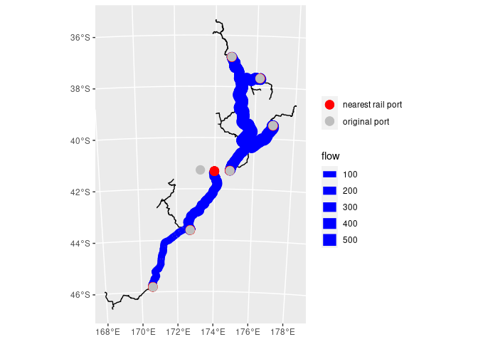

Infrastructure Flows
Spatial networks: the power
In the previous post, I blogged about the challenge of working with spatial networks. Once overcome, the power of spatial network analytics is easily accessed. In this post, I work through a common request in the transport sector: how do a set of origin destination flows aggregate on the transport infrastructure? A whole set of transport relevant policy questions around critical network points and resilience can follow flow calculations.
The importance of loading flows on the network have already been acknowledged by Robin Lovelace and Mark Padgham in their packages stplanr and dodgr. The former was much more relevant to me but the network processing challenge (as highlighted in the previous post) was a key blocker. Now that the network connectivity has been temporarily addressed, I thought it would be an interesting exercise to see if the sfnetworks package itself allows for aggregation of routes into flows.
Set up
All code for this post can be found on github. Dataset and package dependencies are all included in the repository directly. The requirements are the same as the previous post.
# kiwirail data from
# https://data-kiwirail.opendata.arcgis.com/datasets/kiwirail-track-centreline
# Basic filter and transform of rail network from Kiwirail
# only keeping tracks
nz_rail <- st_read(here::here("data", "kiwirail.gdb")) %>%
filter(!Type %in% c("Crossover", "Yard Track")) %>%
st_transform(2193) %>%
st_cast("LINESTRING")
# nz port locations
port_locs <- read_csv(here::here("data",
"port_locations.csv")) %>%
st_as_sf(coords=c("lon", "lat"), crs=4326) %>%
filter(country == "New Zealand") %>%
filter(LOCODE %in% c("NZAKL", "NZTRG", "NZNPE", "NZWLG",
"NZNSN", "NZLYT", "NZPOE")) %>%
st_transform(crs=2193)
# Convert to sfnetwork
# rounding coordinates to prevent precision errors
st_geometry(nz_rail) <- nz_rail %>%
st_geometry() %>%
map(~round(., -1)) %>%
st_sfc(crs = st_crs(nz_rail))
# subdividing edges where intersections happen at
# internal points. excluding this creates a disconnected network
# because sfnetwork only connects edges where edges join at the
# terminal nodes
railway_net <- nz_rail %>%
as_sfnetwork(directed=F) %>%
convert(to_spatial_subdivision) %>%
convert(to_spatial_simple)
# Function for route calculation
# returns a function that uses sfnetwork global variable
st_network_paths_mod <- function(from, to){
return(try(st_network_paths(railway_net, from, to)))
}Create origin destination (OD) data
In this example, we don’t have a pre-set OD matrix so we need to create our own. For some aspects of my work, I’m interested in freight flows between New Zealand ports so I have created a simple example of that use case. The steps to create an OD matrix are a simple extension of the previous post - the main differences being:
the
crossingfunction to create all combinations of two vectors and,a simple
rnormfunction to generate some fake flows per origin-destination combination.
# Isolate nodes as sf dataframe
nodes_rail <- railway_net %>% activate("nodes") %>% st_as_sf()
# Create origin destination (OD) for all port-port combinations
# Create dummy 'flow' values for every OD pair
orig_dest <- crossing(from = port_locs %>%
st_set_geometry(NULL) %>% pull(LOCODE),
to = port_locs %>%
st_set_geometry(NULL) %>% pull(LOCODE)) %>%
inner_join(port_locs %>% select(LOCODE), by = c("from"="LOCODE")) %>%
rename(from_port = geometry) %>%
inner_join(port_locs %>% select(LOCODE), by = c("to"="LOCODE")) %>%
rename(to_port = geometry) %>%
rowwise() %>%
mutate(flow = (rnorm(1) * 100) %>% abs()) %>%
mutate(to_index = st_nearest_feature(to_port, nodes_rail),
from_index = st_nearest_feature(from_port, nodes_rail),
route = row_number())
# Find shortest path routes
routes_df <- orig_dest %>%
mutate(path = pmap(list(from = from_index, to = to_index), .f=st_network_paths_mod)) %>%
unnest(cols=c(path))Visualise all routes
All the edges involved in a route are contained in the edge_paths list. Once expanded out fully with unnest, we can join the edge geometries from the sfnetworks dataframe for a simple visualisation. From a cursory glance, it seems like all the routes that could be found have been. Many port-port combinations have no routes because they are on different islands. Terrestrial infrastructure networks in New Zealand have two components - one component for Te Ika a Maui (North Island) and another for Te Waipounamu (South Island). Noting, the existence of the two components because there is no land bridge connecting the islands.
# Unnest to get one row per edge
# Join on edge sf dataframe for geometry
port_port <- routes_df %>%
unnest(cols=c(edge_paths)) %>%
select(edge_paths) %>%
inner_join(railway_net %>%
activate("edges") %>%
st_as_sf() %>%
mutate(edge = row_number()), by = c("edge_paths" = "edge")) %>%
st_as_sf()
# Visualise all routes
ggplot() +
geom_sf(data = railway_net %>% activate("edges") %>% st_as_sf()) +
geom_sf(data=port_port, colour="red") Aggregating flows
Since the routes dataframe can be unnested to give one edge per route per row, we can group by the edge and summarise the relevant property per edge. The property we’re intersted in is the inherited origin-destination flow value that every edge in particular route inherits. Thus, to get the overall flow passing through any edge in the network, we summarise across all routes passing through it by adding up all the flow values.
# Group by every edge that has a route passing through
# Aggregate all routes that pass through any given edge
# Aggregation by summing flow values
flows_df <- routes_df %>%
unnest(cols=c(edge_paths)) %>%
group_by(edge_paths) %>%
summarise(flow = sum(flow))Visualise flows
Since the flow values between the ports were randomly assigned, there isn’t much meaning in the visualisation. However, one useful aspect to note is the association of the “nearest rail port”. All ports in this example, except one, are on a railway line. Port Nelson (at the top of the South Island) is the only isolated red dot without a grey dot underneath. It’s closest rail node is at Picton. In an actual analysis, we would have to check whether the nearest port identified by the algorithm is meaningful for the use case. It could be that rail traffic might stop elsewhere, that is more conveniently located to a short road transfer route rather than the closest node in the rail network.
# Visualise aggregated flows
ggplot() +
geom_sf(data = railway_net %>%
activate("edges") %>%
st_as_sf()) +
geom_sf(data = railway_net %>%
activate("edges") %>%
st_as_sf() %>%
mutate(row = row_number()) %>%
inner_join(flows_df, by = c("row" = "edge_paths")),
aes(size=flow),
colour = "blue") +
geom_sf(data = railway_net %>%
activate("nodes") %>%
st_as_sf() %>%
mutate(row = row_number()) %>%
inner_join(orig_dest, by = c("row" = "to_index")),
aes(colour = "red"),
size = 4) +
geom_sf(data = orig_dest %>% select(from_port) %>% distinct() %>% st_as_sf(),
aes(colour = "grey"),
size = 4) +
scale_colour_identity(breaks = c("red", "grey"),
labels = c("nearest rail port", "original port"),
guide = "legend",
name = "")